看見證據
注意形狀、數量、位置與紋理。
Scientific Illustration Lab
科學繪圖探究室今日任務：成為小小科學繪圖家
Scientific Illustration Lab
畫得漂亮不是唯一目標，觀察得仔細、記錄得正確，才是科學繪圖的真正精神！
今天，你將化身為科學繪圖家，用眼睛發現細節，用鉛筆留下證據。
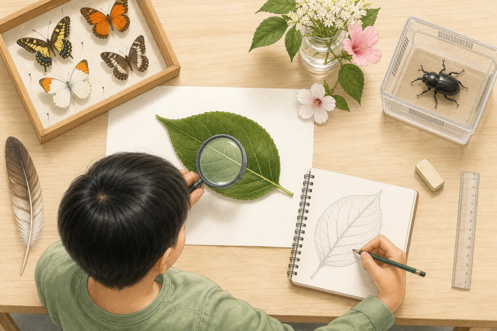
注意形狀、數量、位置與紋理。
不擅自補上沒有觀察到的構造。
對照標本、圖鑑與可信資料再完成。
02 — LOOK CLOSER
科學繪圖是結合科學觀察與圖像表達的方法。繪圖者仔細看真實物體，把重要的外形、比例、構造、紋理與特徵忠實留下來。
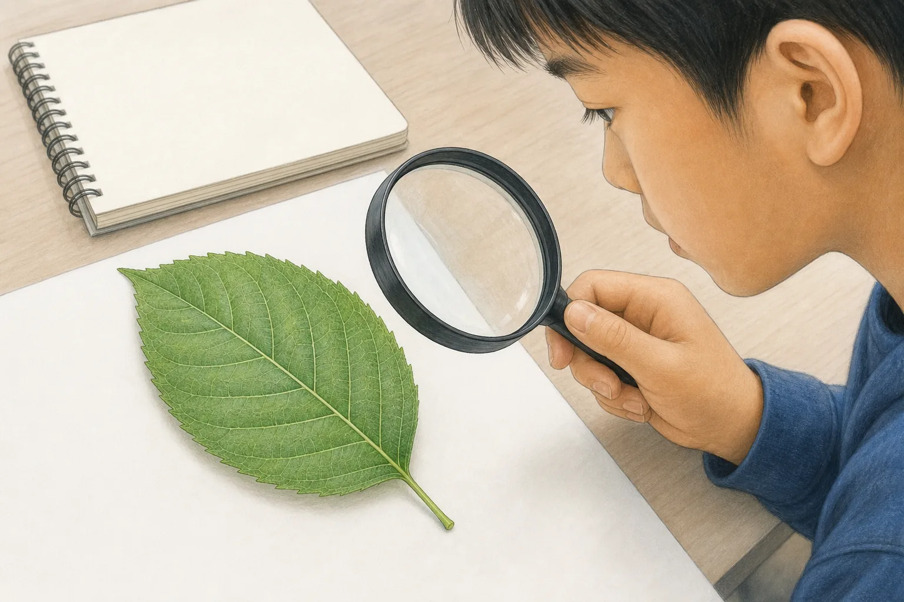
03 — PURPOSE CHANGES THE PICTURE
沒有哪一種圖像永遠最好；要看你想回答的問題。分類紀錄重視可比對的構造，藝術作品可以重視感受，攝影則保留拍攝瞬間。
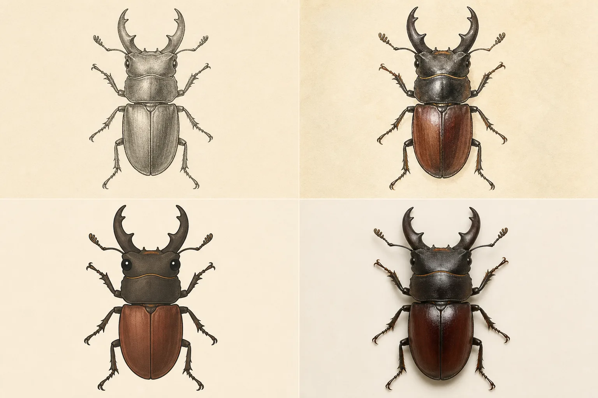
忠於觀察、比例與可辨識特徵；可整理或強調重要構造，常搭配標示與比例尺。
| 比較項目 | 科學繪圖 | 藝術繪畫 | 卡通插畫 | 科學攝影 |
|---|---|---|---|---|
| 主要目的 | 解釋與辨認 | 感受與表現 | 簡化與傳達 | 保存拍攝瞬間 |
| 忠於觀察 | 必須，以證據為本 | 不一定 | 不一定 | 忠於鏡頭所拍範圍 |
| 自由變形 | 不可造成錯誤 | 可以 | 常會誇張 | 後製不應誤導 |
| 構造標示 | 視任務需要 | 通常不需要 | 通常不需要 | 可後製加入 |
| 比例尺 | 必要時加入 | 通常不需要 | 通常不需要 | 顯微或標本照常需要 |
| 背景 | 簡化，讓主體清楚 | 可自由安排 | 可裝飾 | 依拍攝環境而定 |
| 使用場合 | 研究、教學、分類 | 創作、展覽 | 故事、識別、娛樂 | 觀察存證、量測 |
選一個答案，再讀讀證據。
04 — PACK YOUR FIELD KIT
先從鉛筆、橡皮擦、尺、放大鏡與紀錄本開始；需要更細節或正式完稿時，再加入顯微鏡、代針筆、顏料或數位工具。
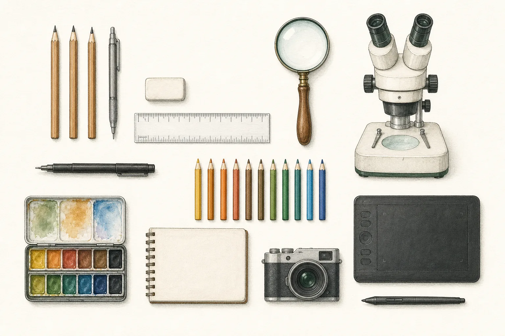
用途：2H 淡稿、HB 輪廓、2B 加深。
階段：草圖到細節。
提醒：不要一次壓太深。替代：一般 HB 鉛筆。用途：穩定細線與局部結構。
階段：細節、標示線。
提醒：筆芯易折。替代：削尖的木鉛筆。用途：淡化輔助線、修正比例。
階段：草圖與修正。
提醒：輕擦避免破紙。替代：乾淨軟橡皮。用途：量測、畫直線與比例尺。
階段：觀察前、標示。
提醒：寫清楚單位。替代：印有刻度的書籤。用途：看葉緣、毛、紋理。
階段：觀察與核對。
提醒：不要用來聚焦陽光。替代：平板相機放大。用途：觀察立體小物與表面。
階段：局部放大。
提醒：由低倍率開始。替代：夾式微距鏡頭。用途：正式清稿與點描。
階段：確認無誤後完稿。
提醒：乾後再擦鉛筆。替代：細尖黑筆。用途：標示辨識用色與漸層。
階段：完成線稿之後。
提醒：顏色服務於特徵。替代：普通彩色鉛筆。用途：透明疊色呈現自然色。
階段：有需要的完稿。
提醒：先試色、等乾。替代：水溶性色鉛筆。用途：保存原始觀察與修改。
階段：全程。
提醒：標日期與頁碼。替代：空白筆記紙。用途：記錄角度、顏色與環境。
階段：觀察輔助。
提醒：照片不能取代現場觀察。替代：借用教室裝置。用途：圖層、透明度與局部放大。
階段：數位草圖到完稿。
提醒：保留原始圖層。替代：觸控筆平板。選出五個基本且合適的工具，再檢查工具箱。
先選擇，再檢查。
05 — EIGHT STEPS, ONE CAREFUL RECORD
播放逐步導覽，觀察每一步增加了什麼。動畫每次只強調一個決定，讓你知道「現在要看什麼」。
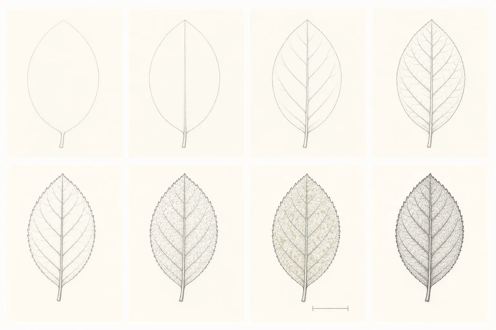
01 / 08
從葉片、花朵、果實、種子、昆蟲、羽毛、貝殼或岩石中，選一個能安全、穩定觀察的對象。
06 — METHODS & FIELDS
複雜的觀察，可以拆成一個個可執行的方法。選擇方法時，先問：我想讓哪個證據變清楚？
先抓整體形狀與邊緣特徵，暫時不畫內部細節。
把複雜物拆成圓、橢圓、三角、長方或圓柱。
用格線比較位置，避免局部越畫越大或偏移。
適合葉片、花朵、昆蟲等左右近似對稱物。
觀察主體周圍空白形狀，反過來校正輪廓。
放大花蕊、口器、翅脈、葉緣或種子表面。
呈現果實內部、花部、種子、地層或裝置關係。
以點與線的密度表現毛、凹凸、暗部與質感。
量測實物並畫出代表已知長度的線段與單位。
使用圖層、透明度與局部放大，但不取代真實觀察。
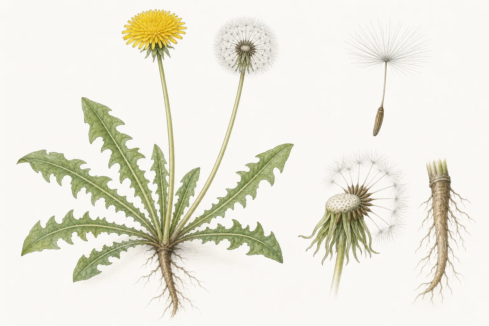
葉、花、果實、種子、根與全株；要注意葉序、葉脈與花部數量。
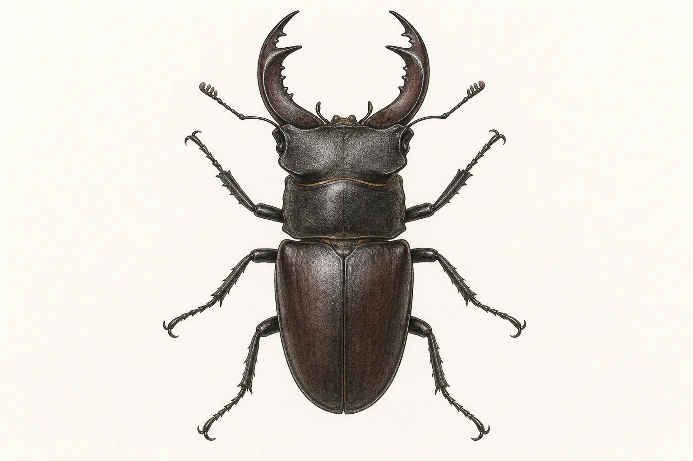
頭、胸、腹、六足、翅脈、觸角與口器的數量和連接位置。
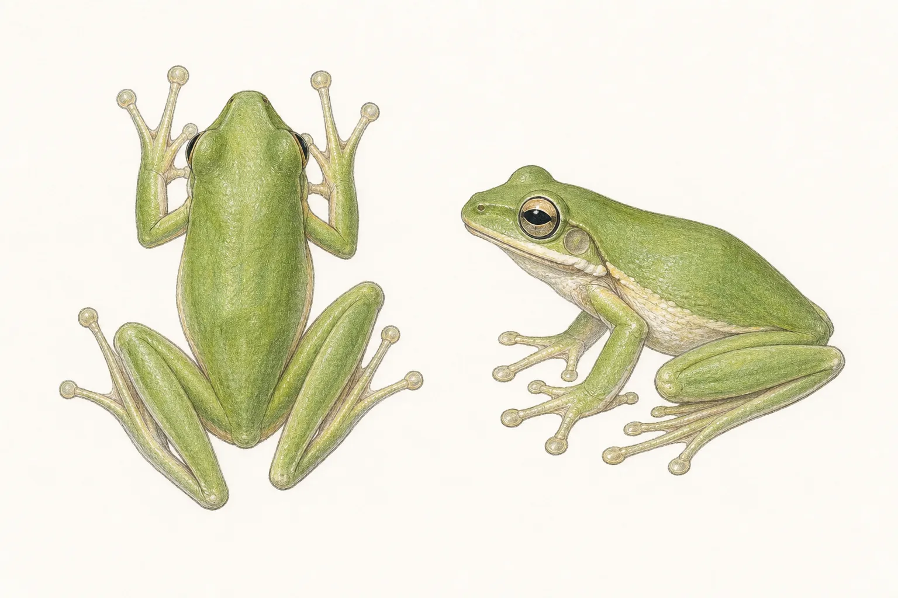
身體比例、外部構造、骨骼或行為姿勢；同一個體可畫多角度。
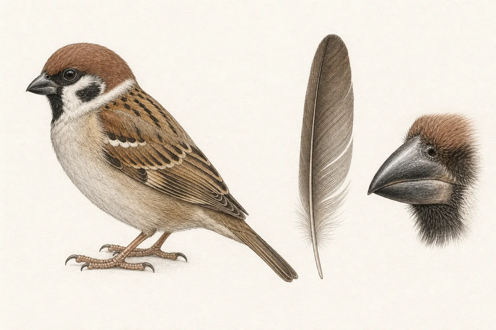
羽色、喙形、腳、翅膀與姿態，都能提供生活方式的線索。
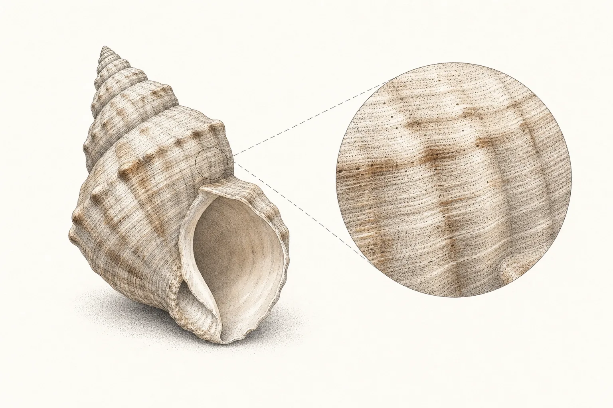
魚、貝、甲殼類、珊瑚與浮游生物；易失真的軟體構造要特別記錄。
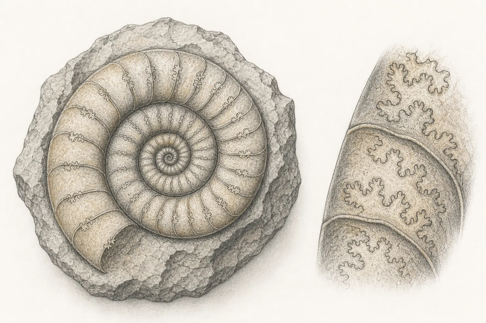
岩石紋理、晶形、化石輪廓與地層剖面，常需比例尺與方向。
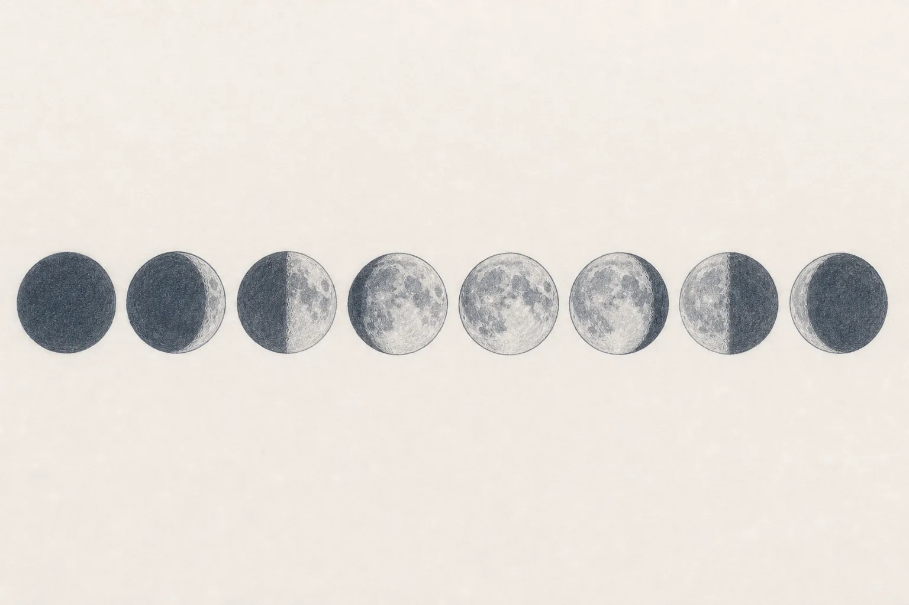
月相、太陽黑子、行星表面與望遠鏡視野，日期時間尤其重要。
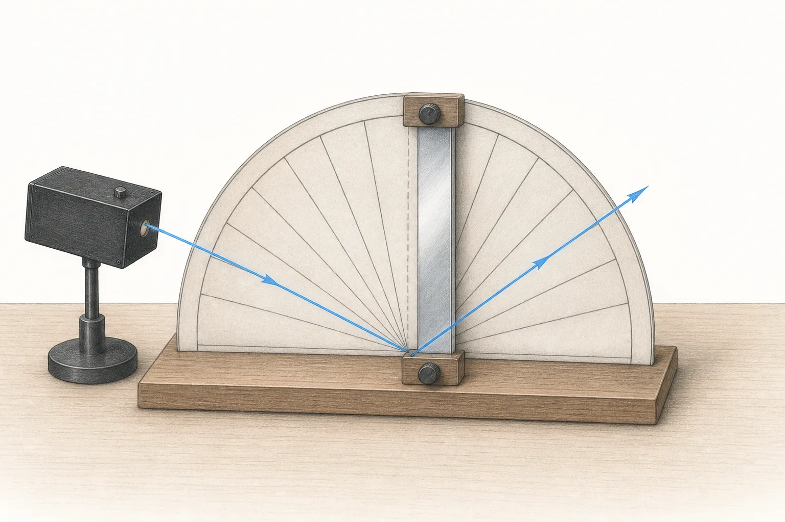
器材、連接、材料位置與力或光線方向，應讓別人能照圖重現。
本頁圖片皆為 AI 生成之教學示意圖，實際物種特徵仍應配合標本、圖鑑或可信資料查證。
07 — OBSERVE, DECIDE, EXPLAIN
不是猜答案，而是指出「我在哪裡看到什麼」。每個任務都有重設與即時說明，也能用鍵盤或手機點選完成。
任務一
依提示點選圖上對應位置。已完成的構造會留在觀察清單。
這次要找：葉尖
葉尖是葉片最前端的位置。
任務二
逐題核對圖像。答完後會解釋證據，不只告訴你對錯。
任務三
這張圖故意畫錯。選出你看見的六種問題，再讀解釋。
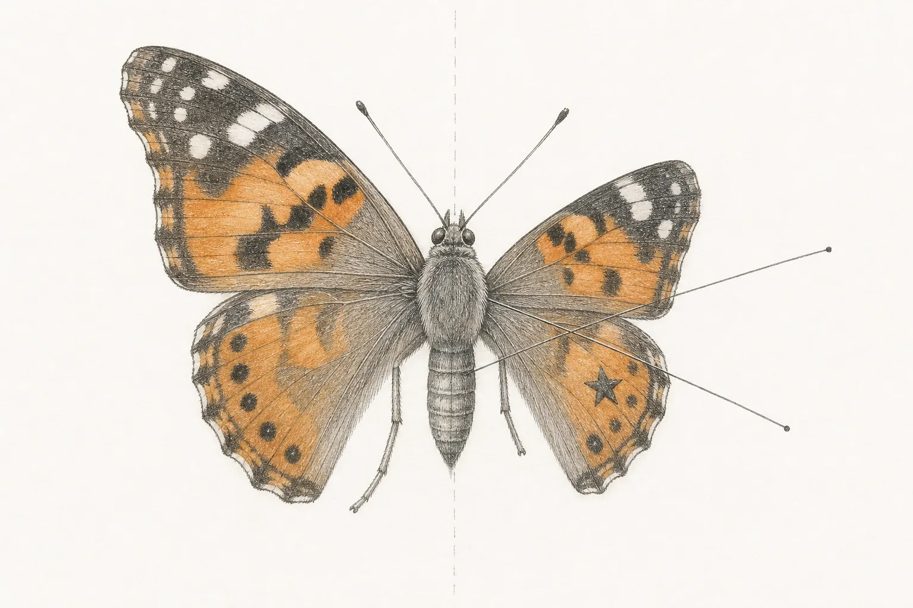
找出你能用觀察證據說明的問題。
任務四
可拖曳標籤到位置，也可先點標籤、再點位置；兩種操作得到相同結果。
選一個標籤，再選它應放的位置。
08 — CLEAR RULES, FLEXIBLE FORMATS
這些是實用的基本原則，不是全球完全一致的硬規定。研究領域、學校、比賽或出版單位可能有不同格式，請先確認任務要求。
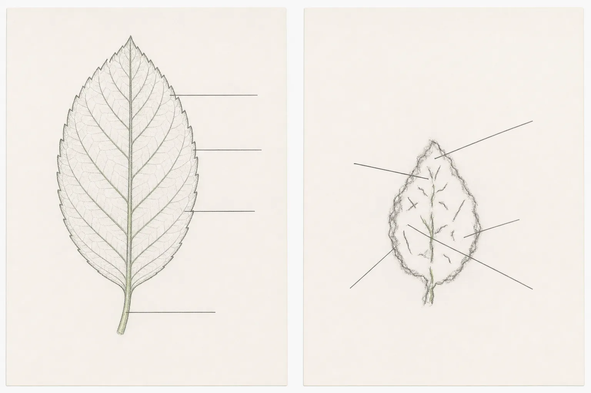
09 — STUDY THE EVIDENCE
點選分類篩選，再放大查看。觀察作品的目的、媒材和可辨識證據，而不只評價「漂不漂亮」。
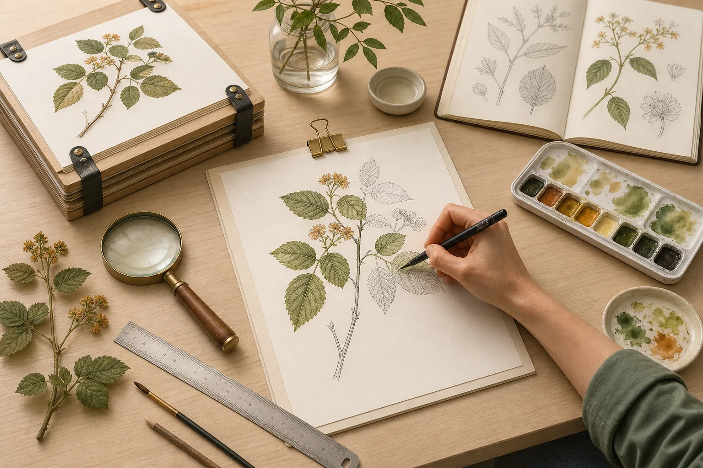
對象：蒲公英｜媒材：石墨淡彩
重點：基生葉、無葉花莖、主根與冠毛果實。
對象：朱槿｜媒材：石墨淡彩
重點：五瓣與伸出的雄蕊筒。
對象：四類果實與種子｜媒材：石墨淡彩
重點：散播構造與剖面差異。
對象：鍬形蟲｜媒材：石墨淡彩
重點：六足連接胸部、觸角與翅鞘對稱。
對象：歐亞樹麻雀｜媒材：石墨淡彩
重點：喙形、羽片、羽軸與停棲足。
對象：海螺殼｜媒材：點描淡彩
重點：螺塔、殼口與連續生長紋。
對象：菊石化石｜媒材：石墨點描
重點：盤旋殼室與縫合線。
對象：月相｜媒材：石墨
重點：明暗面隨日期連續變化。
對象：平面鏡實驗｜媒材：石墨淡彩
重點：器材位置與光線方向。
本圖庫均為 AI 生成之教學示意圖，實際物種特徵仍應配合標本、圖鑑或可信資料查證。
10 — FOLLOW TRUSTED TRAILS
優先選用政府、博物館、大學、圖書館與學會的官方網站。外部內容與網址可能更新，使用時仍請留意網站公告。
官方資源清單載入中；即使載入失敗，頁面底部仍保留查證說明。
外部連結最後查證日期：
11 — CHALLENGE YOUR EVIDENCE SKILLS
共 10 題，涵蓋目的、順序、工具、比例尺、標示、AI 查證、科學誠信與修改反思。每題作答後立即解析。
10
題目包含單選、多選、排序、配對、找錯與情境應用。
12 — KEEP THE ORIGINAL EVIDENCE
欄位會自動儲存在這台裝置的瀏覽器中。你可以列印、匯出 Markdown 或下載空白學習單，不需要登入。